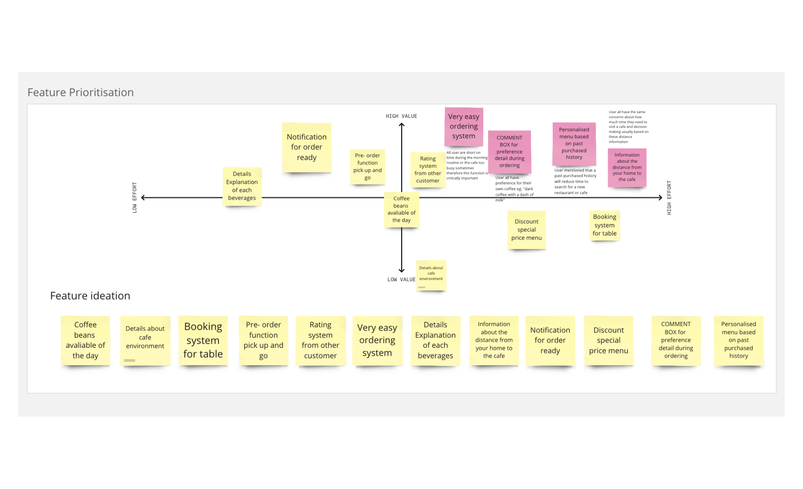

Udacity
Digital Cafe
Project
Crafting user-centric design strategies for seamless app navigation, ensuring cohesive visual language, and enhancing Udacity's digital cafe platform.
User persona
Our research revealed that people value time efficiency in their morning routines. Users often prioritize speed when ordering foods and drinks in the early morning.
Themes and Opportinity
After collecting a substantial amount of data, we organized and synthesized our findings. We identified common themes, pain points, and opportunity based on user personas.

Features prioritisation
The primary challenge is to ensure a seamless and enjoyable user experience while addressing the complexities associated with digital transactions and food orders, based on the research findings from research phrase. This includes optimizing navigation for users to easily find items, streamlining the checkout process, and providing clear and appealing visuals.
Design User flow
Usability testing sessions were conducted with real users to assess the app's ease of use, identify pain points, and gather feedback for further improvements.
Design: Iteration
Our process was iterative, with continuous feedback loops from users, stakeholders, and developers. We used these insights to make refinements and enhancements to the app.
Usability Testing
The user feedback emphasized issues with both navigation bar label clarity, causing confusion about section purposes, and button placement, leading to difficulties in locating the primary action button on the page. In response, our team has undertaken a comprehensive redesign of the app, integrating these insights to enhance user experience and address these specific concerns.
Style Guide
A comprehensive style guide has been developed to encompass all necessary elements, serving as a foundational resource to initiate the wireframing process in Figma, ensuring consistency and efficiency throughout the design phase
Lo-fi Prototyping
A preliminary design iteration, guided by consolidated research insights, emphasizes a low-fidelity prototyping approach focused on prioritizing simplicity and early-stage exploration.
Hi-fi Prototyping
The clickable high-fidelity prototype or an alternative data visualization format has been developed through several iterations guided by user feedback.
Review & Iteration
Continuing the review thoroughly, ensure to identify any potential issues and opportunities for enhancing accessibility, and annotate the screens accordingly. This comprehensive approach fosters a more inclusive and impactful user experience, aligning with contemporary standards of accessibility and design excellence.